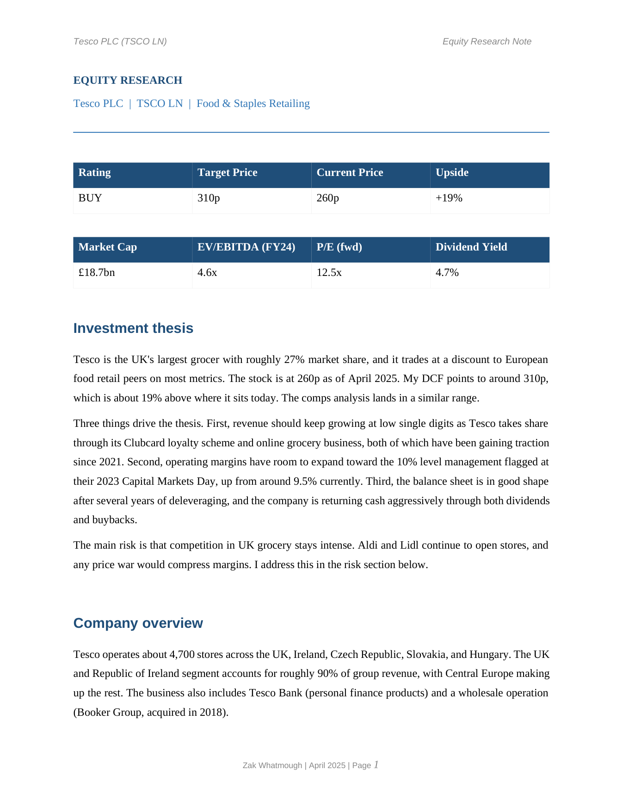
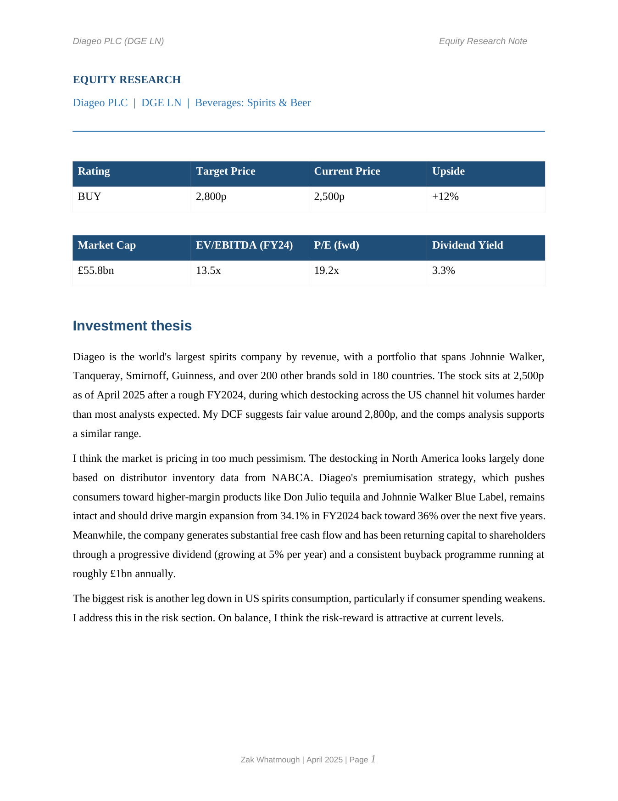

Overview
I wanted to build a valuation the way a junior analyst does it at an investment bank or a Big Four advisory team, rather than downloading a template. Each company gets the same treatment: a 12-tab integrated model where the income statement, balance sheet and cash flow all link, a DCF and a trading comps cross-check, and a research note that ends in a rating and a target price. A Python script then reads the model back and checks every historical input against the published annual reports.
The two companies

Tesco PLC (TSCO LN): BUY, target 310p
Tesco is the UK's largest grocer with roughly 27% market share. The model splits revenue into UK & ROI and Central Europe, builds full PP&E and right-of-use rollforwards, IFRS 16 lease schedules, a debt rollforward, and dividend and buyback modelling, then values it with a mid-year DCF and a six-peer comps table. Target 310p against 260p, about 19% upside.

Diageo PLC (DGE LN): BUY, target 2,800p
Diageo is the world's largest spirits company, with brands like Johnnie Walker, Guinness and Don Julio. Same 12-tab architecture, adapted for spirits: revenue split into North America and International, much higher EBITDA margins (around 35% versus Tesco's 9.5%), a large intangible base, and inventory days of 160 to 170 because spirits have to age in barrels. Target 2,800p against 2,500p, about 12% upside.
Valuation summary
Tesco. DCF around 280p (WACC 5.6%, terminal growth 2.0%), trading comps of 280 to 310p across six peers, giving a 310p target and roughly 19% upside from 260p. BUY.
Diageo. DCF around 2,800p (WACC 6.2%, terminal growth 2.5%), trading comps of 2,600 to 2,900p across five peers, giving a 2,800p target and roughly 12% upside from 2,500p. BUY.
In both cases the two methods land in the same range, which is the point of running them together. The DCF sets the anchor and the comps sanity-check it against how the market is pricing similar businesses.
How the model is built
Each workbook runs across twelve linked tabs: a cover page, assumptions, income statement, working capital, capex and D&A, debt and interest, dividends and buybacks, balance sheet, cash flow, DCF valuation, trading comps, and charts. Nothing downstream is hardcoded, so a change in an assumption flows all the way through to the valuation.
- Live formulas throughout, with a Base, Bull and Bear case driven by a single toggle.
- WACC built up from CAPM, with a mid-year discounting convention in the DCF.
- Source notes on the assumptions tab citing the specific annual report figures.
- Cross-formula error checks, sensitivity tables on WACC and terminal growth, and a peer comps table.
- A Python validation script (openpyxl, pandas) that reads the model back and flags any historical input that doesn't match the filings.
Tools and sources
Built in Excel and Python (openpyxl, pandas, numpy), with the notes generated through Node and docx. Inputs come from Tesco and Diageo annual reports FY2020 to FY2024, Bloomberg for beta, peer multiples and market data, Damodaran Online for the equity risk premium and country risk, and Bank of England data for the 10-year gilt yield.
Download the files
Personal research for educational purposes. Not investment advice and not the view of any institution.